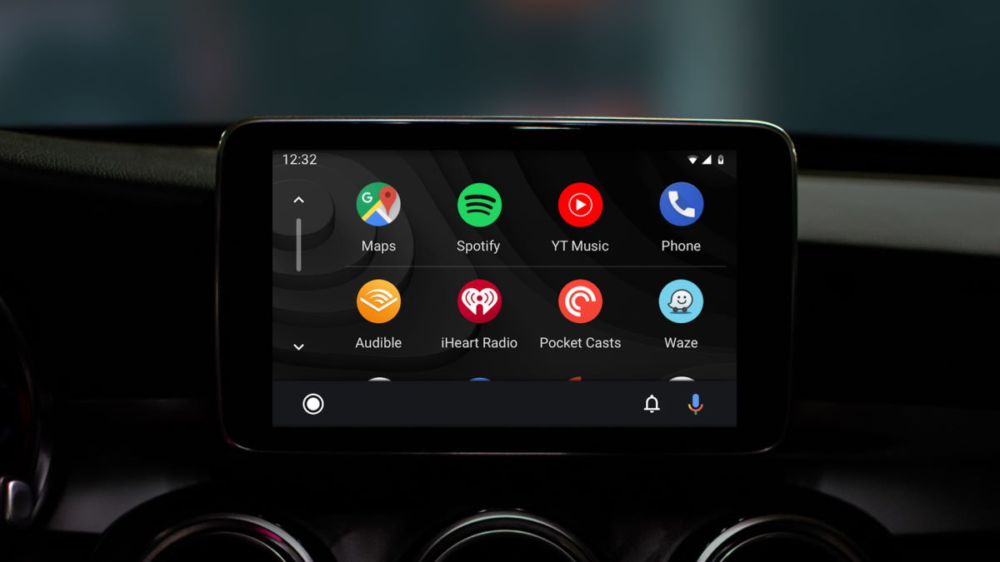

A Google está a olhar para o Android Auto de uma forma única e acelerou a chegada de novidades para esta sua solução. As melhorias são constantes e agora resolveu olhar para a sua personalização e passou a dar aos utilizadores a possibilidade de escolher a imagem de fundo, mas com uma condição que muitos podem não gostar.
 Apesar de ter começado de forma lenta, a Google tem acelerado o passo no que toca a revelar novidades para o
Android Auto.
A gigante das pesquisas quer trazer muitas melhorias e algumas estão já a ser preparadas de forma silenciosa
para serem
reveladas muito em breve.
A mais recente novidade, que chegou com a versão 11, foca-se de forma única na personalização e dá aos
utilizadores a
possibilidade de escolher a imagem de fundo a ser apresentada. Até agora só era permitido escolher uma das
várias presentes na
lista, controlada e limitada pela Google no Android Auto.
Esta oferta desaparece agora e dá ao utilizador a possibilidade de escolher qualquer imagem ao seu gosto. É
uma opção que
necessita de ser ativada pelo utilizador, algo que deve ser feito dentro das Definições do Android Auto,
junto de todas as
possibilidades já presentes.
Ainda que seja uma personalização acessível, esta tem uma limitação importante que a Google deu ao Android
Auto. A imagem de
fundo que será usada é a mesma definida no smartphone que estiver ligado ao carro e por isso o utilizador
mudará não apenas
num local, mas terá de alterar nos 2.
Existem algumas limitações nas imagens de fundo que podem ser usadas. Apenas imagens estáticas podem ser
usadas com esta
funcionalidade, ou seja, as imagens animadas não vão ser copiadas, nem qualquer uma que seja especializada.
Quando uma imagem
de fundo não puder ser sincronizada, o Android Auto mostrará apenas a última compatível.
Apesar de se pensar que é algo associado à última versão do Android Auto, existe a dúvida de como a Google
está a libertar esta novidade. Há utilizadores que reportam essa nova opção, sem especificarem de forma
clara em que versão estão. Ainda assim, é algo que estará disponível para todos.